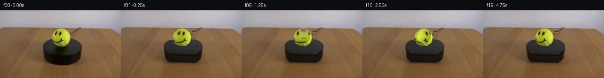

![首帧]()

Round 00
2026-11-06T10:09:57.076262+00:00像素候选变化代码 +185/−0inspection 更新
pixels 5d2676b4d939796d · code 75457ed29cc19d72
查看本轮 generate.py 真实 diff
--- previous/generate.py
+++ current/generate.py
@@ -0,0 +1,185 @@
+"""generate.py — PixelWorld-Text: rotating tennis ball with smiley face.
+
+Generates 20 RGB frames (256×144, 4 fps, 5 s).
+Frame 00 is exactly `first_frame.png`.
+Frames 01–19 show the tennis ball rotating clockwise (360° total).
+Method: spherical inverse mapping with background inpainting.
+"""
+import numpy as np
+from PIL import Image
+from pathlib import Path
+
+# ── Configuration ──────────────────────────────────────────────────
+CASE_DIR = Path(__file__).parent
+FIRST_FRAME = CASE_DIR / "first_frame.png"
+TMP = CASE_DIR / ".tmp"
+TMP.mkdir(exist_ok=True)
+
+H, W = 144, 256
+N_FRAMES = 20
+TOTAL_ROTATION_DEG = 360.0 # full rotation over 5 seconds
+BALL_CX = 130.0
+BALL_CY = 54.0
+BALL_R = 18.0 # visible sphere radius
+BALL_R_CORE = 16.0 # core rotating region (avoids edge artifacts)
+BALL_R_OUTER = 22.0 # outer extent including shadow
+
+
+# ── Load first frame ───────────────────────────────────────────────
+arr0 = np.array(Image.open(FIRST_FRAME)).astype(np.float64)
+assert arr0.shape == (H, W, 3), f"Expected (144,256,3), got {arr0.shape}"
+
+Ygrid, Xgrid = np.meshgrid(np.arange(H), np.arange(W), indexing="ij")
+
+
+# ── Build clean background (horizontal interpolation per row) ──────
+def build_background(src):
+ """Inpaint the ball region by interpolating from left and right edges."""
+ bg = src.copy()
+ left_x = int(BALL_CX - BALL_R_OUTER - 5)
+ right_x = int(BALL_CX + BALL_R_OUTER + 5)
+ left_x = max(0, left_x)
+ right_x = min(W - 1, right_x)
+
+ for y in range(H):
+ left_color = src[y, left_x].copy()
+ right_color = src[y, right_x].copy()
+ for x in range(left_x + 1, right_x):
+ t = (x - left_x) / (right_x - left_x)
+ bg[y, x] = (1 - t) * left_color + t * right_color
+ return bg
+
+
+bg = build_background(arr0)
+
+
+# ── Precompute spherical coordinate maps ───────────────────────────
+R_sq = BALL_R * BALL_R
+dist_sq = (Xgrid - BALL_CX) ** 2 + (Ygrid - BALL_CY) ** 2
+# Clamp to avoid sqrt of negative (tiny epsilon at boundary)
+dist_sq_clamped = np.minimum(dist_sq, R_sq - 0.01)
+z_surf = np.sqrt(R_sq - dist_sq_clamped) # front hemisphere depth
+
+# Azimuth angle for each pixel on the visible sphere
+theta_map = np.arctan2(Xgrid - BALL_CX, z_surf) # range [-π/2, π/2]
+# Elevation angle
+phi_map = np.arcsin(np.clip((Ygrid - BALL_CY) / BALL_R, -1, 1))
+
+# Ball mask (inner core that actually rotates)
+ball_mask = dist_sq < BALL_R_CORE ** 2
+# Ball outer mask (transition/shadow, stays static)
+ball_outer = (dist_sq < BALL_R_OUTER ** 2) & (~ball_mask)
+
+# Precompute cos(phi) for reuse
+cos_phi = np.cos(phi_map)
+
+
+# ── Helper: bilinear sample from arr0 at float coordinates ─────────
+def sample_arr0(x_coords, y_coords, mask):
+ """Bilinear sample arr0 at (x_coords, y_coords) for pixels where mask is True.
+ Returns (H, W, 3) array with sampled values where mask, 0 elsewhere."""
+ result = np.zeros_like(arr0)
+ if not mask.any():
+ return result
+
+ # Clip coordinates
+ x_safe = np.clip(x_coords, 0, W - 1.001)
+ y_safe = np.clip(y_coords, 0, H - 1.001)
… diff truncated; 98 more lines …